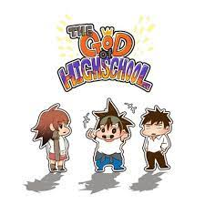
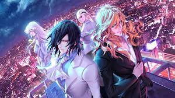
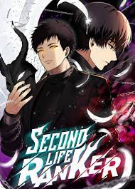
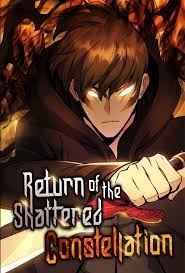

Manhwa/Webtoons To Read
The God of High School
Synopsis: Mori Jin is a high school student and Taekwondo specialist who enters "The God of High School," a fighting tournament that promises the winner anything they want. What began as a competition to seek out the best high school fighter soon reveals itself to be part of a much greater plot that goes beyond Mori's wildest imagination. What will he give to become a true god?

Noblesse
Synopsis: Rai wakes up from an 820-year-long sleep and starts his new life as a student in a high school founded by his loyal servant, Frankenstein. But his peaceful days with other human students are soon interrupted by mysterious attackers known as the "Unions."

The Beginning After the End
Synopsis: King Grey has unrivaled strength, wealth, and prestige in a world governed by martial ability. However, solitude lingers closely behind those with great power. Beneath the glamorous exterior of a powerful king lurks the shell of man, devoid of purpose and will.
Reincarnated into a new world filled with magic and monsters, the king has a second chance to relive his life. Correcting the mistakes of his past will not be his only challenge, however. Underneath the peace and prosperity of the new world is an undercurrent threatening to destroy everything he has worked for, questioning his role and reason for being born again.

Second Life Ranker
Synopsis: Yeon-woo had a twin brother who disappeared five years ago. One day, a pocket watch left by his brother returned to his possession. Inside, he found a hidden diary in which was recorded «By the time you hear this, I guess I will be already dead….»
Obelisk, the Tower of the Sun God, a world where several universes and dimensions intersect. In this world, his brother had fallen victim to betrayal while climbing up the tower. After learning the truth, Yeon-woo decided to climb the tower along with his brother’s diary.
«From now on, I am Cha Jeong-woo.»

Return of the Shattered Constellation
Synopsis: A mere human who ascended to the position of a god, ‘Twilight of the Gods’. After becoming infamous as an Evil God, he lost everything. His Constellation, his faith and his status. His divinity got cut off, and his divine power disappeared. “I’d like you to work with me.”
That’s when the master of the Underworld, Thanatos, offered his hand… After grabbing Thanatos’s hand, ‘Twilight of the Gods’ decided to live again as the player ‘Lee Changseon’ to get back at the gods who threw him down to the underworld! ‘So, I’ve really come back.’

Swordmaster's Youngest Son
Synopsis:Jin Runcandel is the youngest son of the greatest Swordmaster. After he gets himself kicked out of their clan, he meets a tragic fate…but before he dies, a God gives him a second chance. Now he must use his new power for good.
Will Jin become the world’s strongest Swordmaster and live up to his greatest potential?